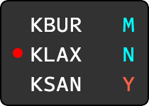
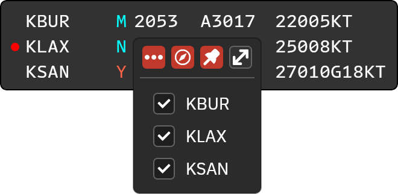
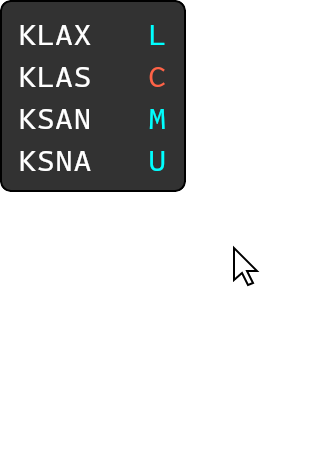

迷你窗口
迷你窗口用紧凑形式显示在线 ATIS 的字母，并可显示观测时间、气压和风。通过主窗口按钮或双击标题栏切换；双击迷你窗口空白区域可恢复主窗口。
窗口控制
右键打开菜单：
- 三点图标：显示或隐藏天气信息，默认隐藏，选择会保存。
- 罗盘图标：按席位设置的磁差显示风向；只有显示天气时可见。需要先在地面风配置磁差。
- 图钉：保持窗口置顶。
- 双箭头：返回完整主窗口。
- 席位列表：勾选要显示的在线席位。
录音提示
人工录音席位需要重新录制时，行首出现小红点。悬停提示为 Voice ATIS needs recording。天气变更后需要重新核对并录音。
查看文字与确认更新
悬停字母可查看文字 ATIS。新情报字母闪烁时，单击确认；右键或中键点击闪烁字母，可同时确认所有待确认更新。
筛选席位
右键菜单中可隐藏不需要显示的席位；隐藏席位不会播放更新提示音，即使全局未静音。
原版的青色表示本机席位、红色表示共享席位。CAN 尚未接通原版共享 Hub，不能依靠红色席位完成跨用户监控。
操作截图参考
以下为上游原版截图，保留英文标签。用于定位操作；品牌、登录字段与网络行为以本页 CAN 说明为准。


